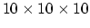

There are a number of details relevant to the existing applications that should be mentioned for the benefit of anyone who might modify the code. The first of these is about the structure of the applications. Each is primarily split up into three separate macros; one for reading in the data, one for the user interface, and one for displaying the data. This seems to be an effective and logical way to organize the complexity of the networks. It should be noted though that the macros for reading the data and displaying it provide many of the auxiliary user interface panels under the module stack.
Of the modules in the Library Workspaces, the most useful to developers of new applications will probably be PF_Grid_from_File, Load_File_Frame, FileDialog_button, and the modules in the string functions library. The PF_Grid_from_File module, which will be mentioned later, contains some of the other modules in the library, including the read_parflow module. The Load_File_Frame module is the top frame in all of the application user interfaces. You should be able to reuse it simply by putting it in your network and connecting it to the UImod_panel or other UI container. The FileDialog_button module is used to easily get a filename string into an application before a ``real'' user interface is built. It simply displays a window with a button that pops up a file dialog window when pressed. The filename is the output of the module. The modules in the string functions library provide some useful string manipulation operations.
The PF_Grid_from_File module is the primary module used to read a .pfb or .pfsb file into an AVS/Express field. It should work ``out of the box'' and not need modification in other networks, other than to change the default grid scaling or downsizing. The merge_hack and Hack groups in this module are workarounds for bugs in the downsize module. Without them, it is impossible to get a field of type Field_Unif out of either the downsize or scale_grid modules. (The Field_Unif type is needed for input to many of the modules in the applications).
It should be noted what is happening in the PF_Grid_from_File module for .pfsb fields, as this is not totally straightforward. After being read into a structured field, they are converted to a uniform field of the original grid size in the sparse_to_unif module. The ReadPFSB module has added an orig_dims array variable to the structured field, so that the sparse_to_unif module knows how big to make the uniform field. If the orig_dims array is not present in the structured field, sparse_to_unif prints a warning and assumes a  grid. This new uniform field is an input to the Field_Chooser module which decides whether to output the .pfb or .pfsb field.